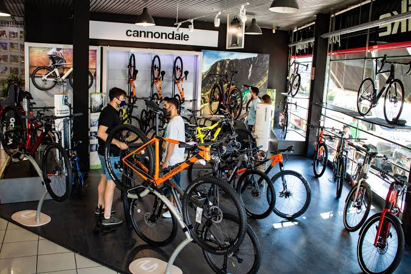

Alquiler de bicicletas
Contamos con bicicletas urbanas y de montaña adaptadas a la topografía de la ciudad. Toda reserva incluye casco y candado sin costo adicional para tu seguridad. Nos enfocamos en darte una experiencia completamente libre de preocupaciones.
